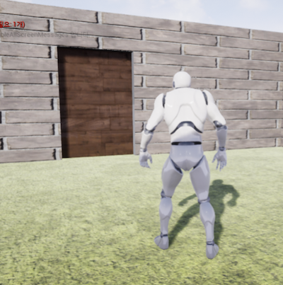
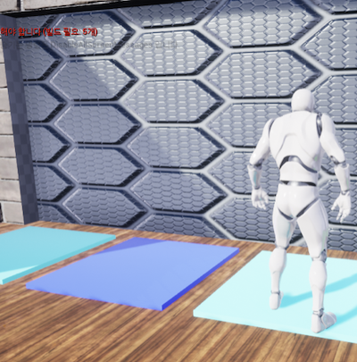
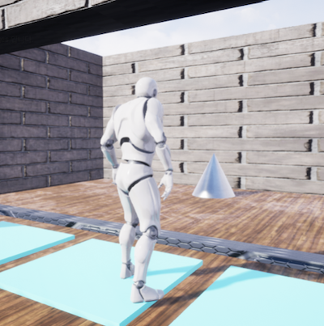
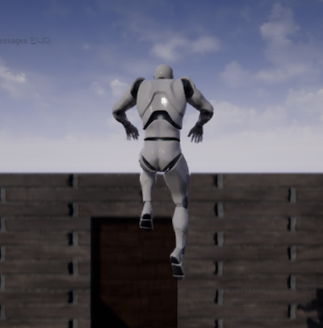

구현 기능
|  |
문이 열리는 기능 문 근처로 가면 문이 열립니다. 만약 문이 잠겨 있다면 열리지 않고 열쇠가 필요하다는 문구가 뜹니다. |
|  |
순서대로 발판 밟기 기능 발판을 순서대로 밟아야 잠긴 문이 열립니다. |
|  |
열쇠 획득 기능 열쇠 근처로 가면 열쇠를 획득할 수 있습니다. |
|  |
다음 스테이지 이동 기능 현재 스테이지를 클리어하면 다음 스테이지로 이동합니다. |
배경과 목적
요즘 게임 개발 시 Unity 다음으로 많이 사용하는 엔진이 Unreal 입니다. 이 정도로 Unreal 역시 게임 개발자들한테 기초 소양이 되었습니다. 따라서 게임 개발자가 될 것에 대비해서 기초 소양을 키우기 위해 저만의 게임을 제작하게 되었습니다.
요즘 게임 개발 시 Unity 다음으로 많이 사용하는 엔진이 Unreal 입니다. 이 정도로 Unreal 역시 게임 개발자들한테 기초 소양이 되었습니다. 따라서 게임 개발자가 될 것에 대비해서 기초 소양을 키우기 위해 저만의 게임을 제작하게 되었습니다.
배운 점
- Unreal에서 블루프린트로 프로그램을 구현하는 법과, 블루프린트와 C++의 장단점을 알게 되었습니다.
- 블루프린트로 이벤트를 구현한 후 호출하는 법을 알게 되었습니다.
- 블루프린트로 Color Object의 속성 값을 변경하는 법을 알게 되었습니다.
진행 절차
- ’왕초보를 위한 Unreal 엔진 4’ 강의를 들으면서 하나씩 따라하였습니다.
- 게임 환경을 구축한 후 여러 기능을 구현하였습니다. 가장 대표적으로, 4개의 발판을 순서대로 밟으면 문이 열리도록 하였습니다.
- 이것은 블루프린트로 이벤트를 구현한 후 호출하도록 하였습니다. 그리고 발판을 밟을 때 Color Object의 Color 값을 변경해서 발판의 색상이 바뀌도록 하였습니다.
- 그러나, 제가 의도한 대로 실행되지 않았습니다. 그래서, 강의에서 따라한 내용을 다시 살펴보면서 문제를 찾아 수정한 끝에, 발판을 순서대로 밟으면 문이 열리도록 할 수 있었습니다.
- 이렇게 해서 원하는 프로그램을 구현할 수 있었습니다.
역량 강화를 위해 가장 노력한 점
Unreal로 충돌 판정, 애니메이션을 이용한 창의적인 게임 구현
Unreal로 충돌 판정, 애니메이션을 이용한 창의적인 게임 구현
전체 구조

사용 기술
Unreal, Blueprints
Unreal, Blueprints
개발 환경
Unreal 4.2.3
Unreal 4.2.3
부연 설명